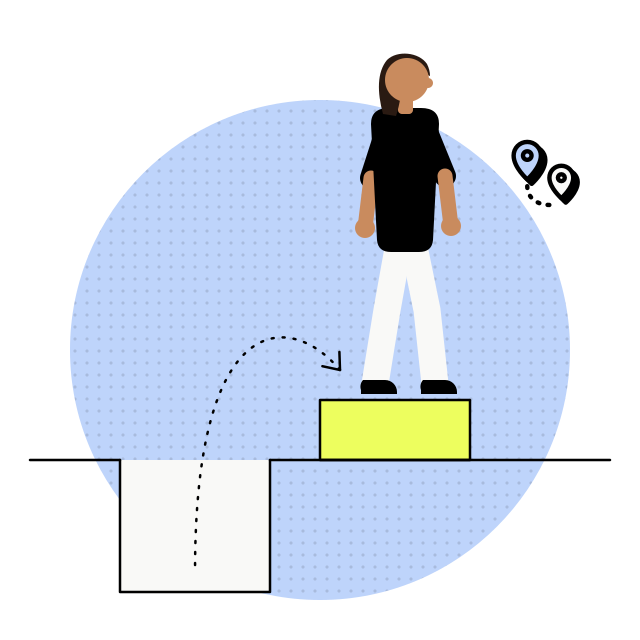
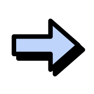
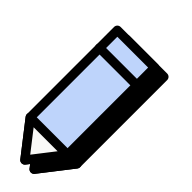
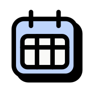

- UX Research
- UX Strategy
- Pesquisa e NPS
Como um mapa de experiência ajudou a deixar o NPS positivo
Um relatório de pesquisa que 16 campus liam e a partir do qual agiam, em vez de arquivar junto com os outros.
Ficha do projeto
- Duração
- 3 meses, da análise do NPS à entrega para os 16 campus
- Jeff
- Idealizador e mentor do formato e da estratégia de entrega
- Time
- Anna Marsillac na pesquisa, Lucas Dias e Natália Dantas no design
A nota geral de NPS de um grupo educacional com 12 marcas e 16 campus, a partir das ações que cada campus construiu com o material. No mesmo ciclo, o acesso ao relatório saiu de 20 para 890 usuários únicos no primeiro mês.

01 · Contexto
Como ajudar cada campus a entender o motivo da nota negativa e a pensar em ações para melhorá-la?
Um grupo educacional com 12 marcas e 16 campus ao redor do Brasil convivia com um NPS negativo, e as ações dos últimos semestres não tinham mudado esse cenário. A pesquisa existia. O que faltava era um formato que fizesse cada campus percorrer a experiência do próprio aluno antes de propor qualquer coisa.
02 · O que move a nota
Um mapa não move NPS sozinho
Quem move é a ação que cada campus toma, e o que estava travado era a leitura da pesquisa. Nos semestres anteriores o relatório chegava e não virava plano.
Com o mapa, os 16 campus construíram planos a partir do mesmo material, e a nota geral saiu de 33 negativos para 15 positivos no ciclo seguinte.
−33Antes
+15Depois
03 · Processo
Três decisões antes de desenhar qualquer tela

Entender os dados do NPS
Clusterizamos os comentários do NPS em grandes eixos e subcategorias, com uma divisão entre semestres. Era preciso um relatório que ilustrasse a jornada do aluno do início ao fim da graduação, para que a ação surtisse efeito no período específico de cada problema.
Consequência A insatisfação deixou de ser uma nota única e passou a ter lugar e momento na jornada.

Completar o que a reclamação não contava
As informações que tínhamos não bastavam, e fomos atrás dos alunos para preencher outros aspectos da vida deles. Um aluno que mora longe da instituição sofre muito mais com um cancelamento de aula em cima da hora do que um aluno que mora perto do campus, e nada disso aparece na nota.
Consequência As ações passaram a considerar o contexto de vida do aluno, não só a reclamação registrada.
Achar um formato que obrigue a percorrer
Antes do tabuleiro testamos dois formatos mais óbvios, um dashboard de indicadores e um resumo executivo de duas páginas por campus. Os dois falharam pelo mesmo motivo. Entregavam a conclusão pronta, e ninguém precisava percorrer a jornada do aluno para chegar nela. O tabuleiro foi escolhido porque obriga quem lê a andar por semestre e por eixo, e é nesse trajeto que o time reconhece o próprio aluno e propõe ação.
Consequência O formato virou parte da solução, não a embalagem da pesquisa.
04 · Solução
Um tabuleiro com as 12 etapas da graduação
Cada instituição recebeu um mapa interativo para transitar por toda a jornada do estudante, com visualização por semestre e por eixo da vida do aluno.
O mesmo material resume a variação de sentimento entre semestres e as palavras‑chave que aparecem em cada cruzamento de eixo e etapa.
- Saúde mental
- Saúde física
- Vida financeira
- Expectativa de futuro
- Dores
- Experiência com a instituição
- Sugestões
- Aplicativos
- Oportunidades

Fig. 01O tabuleiro, do primeiro ao último semestre 
Fig. 02Uma etapa aberta, com a régua de sentimento 
Fig. 03Visão ampla, lado institucional 
Fig. 04Visão ampla, lado pessoal 
Fig. 05O sentimento por eixo ao longo do curso
Relatórios por eixo
Além do mapa, os principais eixos ganharam relatórios em profundidade, com recortes das entrevistas e as reclamações na íntegra. Os achados foram cruzados com informação de mercado, e cada um veio com uma lista curta de indicadores para acompanhar depois da ação.
05 · Resultado
O relatório passou a ser lido
Com um trabalho de várias mãos, o engajamento com os relatórios mudou de patamar. A média de usuários únicos no primeiro mês era de 20 sem o mapa.
Com o mapa, foram 890 no mesmo período, e são esses acessos que viraram os planos de ação de cada campus.
- Sem o mapa
- 20
- Com o mapa
- 890

pontos de NPS, de 33 negativos para 15 positivos

campus construindo plano a partir do mesmo material

etapas da graduação, cada uma com o próprio recorte de sentimento
Pesquisa que entrega a conclusão pronta não vira ação.
O formato não é embalagem. Quando ele obriga o time a percorrer a jornada, o plano de ação nasce de quem vai executar, e é por isso que ele acontece.
Precisa transformar pesquisa em ação dentro do time? Me chama no WhatsApp ou veja o próximo caso.
Próximo caso, Processo com IA